* Equal Contribution
We address Vision-Language Navigation in unseen indoor environments where robots must follow natural-language instructions and locate referred objects without pre-built maps or fixed vocabularies. VLMs excel at semantic understanding but cannot reliably emit metric quantities such as range and bearing. We implement this separation as Embodied-Nav-MCP, a Model Context Protocol server whose 10 callable tools inherently enforce metric boundaries -no tool accepts distance in meters or bearing in radians -preventing hallucinated coordinates from reaching the robot. On the CMU VLN Challenge 2026 development set, AnchorVLN achieves 64.4% instruction-following accuracy and clears the object-reference overlap threshold on 10 / 45 questions versus 0 for direct estimation.
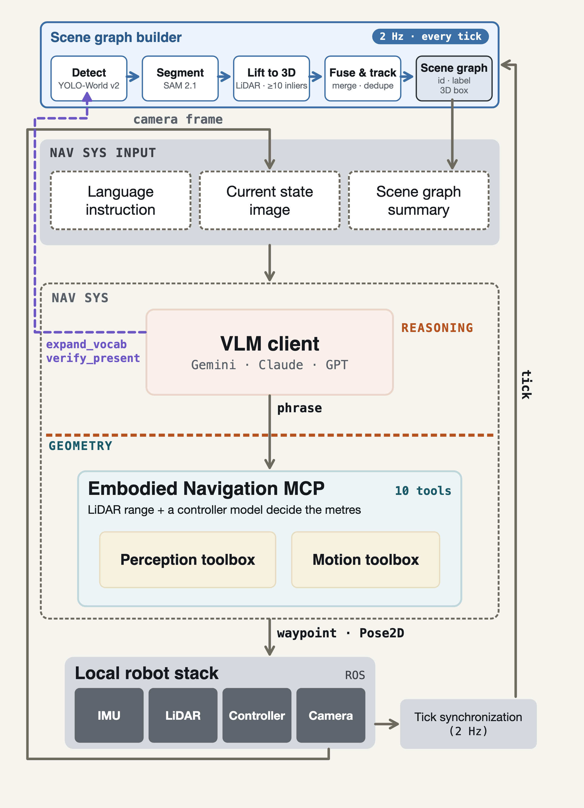
Figure 1. AnchorVLN architecture. The VLM client reasons about what to look for (phrases); the Embodied Navigation MCP decides where it is (geometry). No metric value crosses the dashed boundary - only phrases and opaque handles.
Every input is a phrase or a handle from an earlier call - no input is a number - so the client can name a measurement the system has made but cannot author one.
| Tool | Input | Returns |
|---|---|---|
| Perception - query or steer; robot stays put | ||
| ground | phrase | handles, or refusal |
| expand_vocab | phrase | classes added |
| verify_present | phrase | handle, or not found |
| nearest | handles, anchor | handle |
| farthest | handles, anchor | handle |
| between | two handles | handle (a passage) |
| Tool | Input | Returns |
|---|---|---|
| Motion - the vehicle moves | ||
| drive_to | handle | arrived, moved, stalled |
| explore | handles to avoid | handles newly seen |
| orbit | handle | same handle, refined |
| Output | ||
| publish | handle | - |
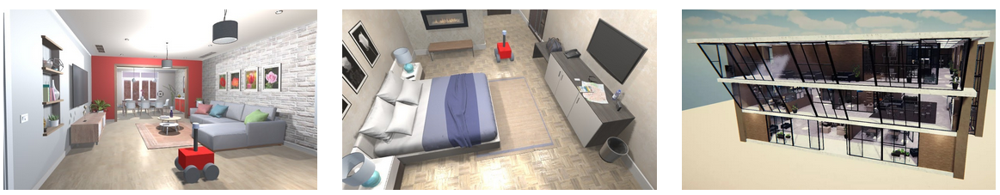
CMU VLN Challenge 2026 - 15 indoor scenes, 10-min budget per question.
Instruction following: drive a free-form language instruction; scored on the trajectory.
Object reference: find the referred object and answer with its 3D bounding box.
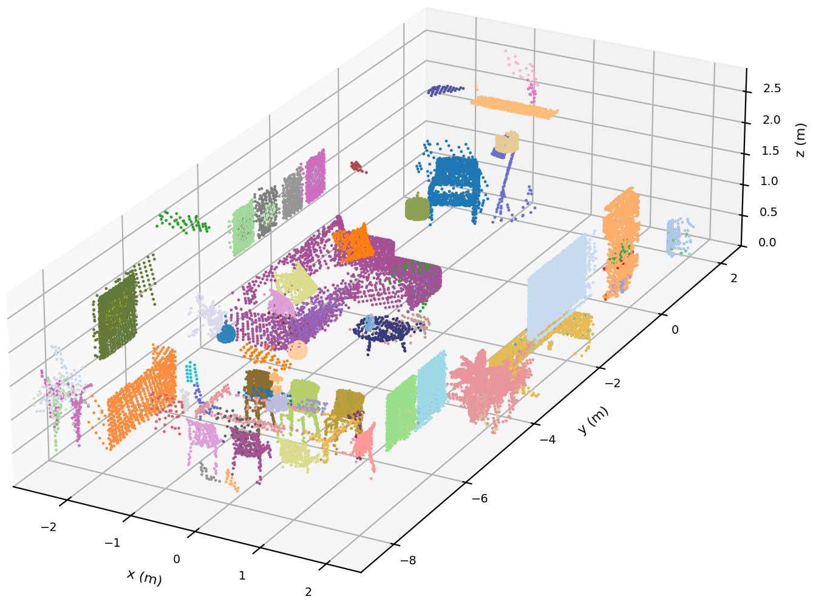
Each colour is one object record - id, label, 3D box - fused from LiDAR sweeps at 2 Hz and refined as the robot moves. Every handle the VLM client uses points into this graph.
| Arm | Score | Δ | t | nDTW | TL | Approach |
|---|---|---|---|---|---|---|
| Full system | 64.4% | – | – | 0.360 | 1.23 | 1.58 m |
| w/o Lift | 63.6% | −0.8 | 0.23 | 0.279 | 1.53 | 1.73 m |
| w/o Platform Model | 51.1% | −13.3 | 2.77 | 0.352 | 0.79 | 2.10 m |
| Arm | Hit (IoU ≥ 0.1) | Mean IoU |
|---|---|---|
| Full system (grounded) | 22% | 0.060 |
| w/o tool structure (naive) | 18% | 0.054 |
| w/o geometric grounding | 0% | 0.000 |
Recorded steps traced through MCP tools: the VLM reasons about what; perception measures where.
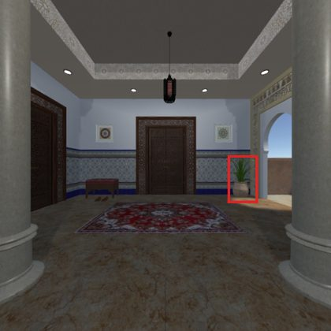
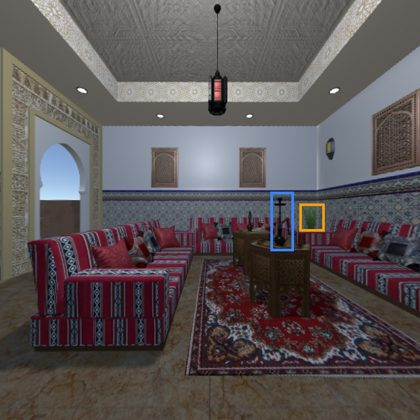
ground's VLM names 2 candidate plants and the hookah anchor.farthest(plants, hookah) → the plant by the doorway.drive_to → settles, moved 1.10 m.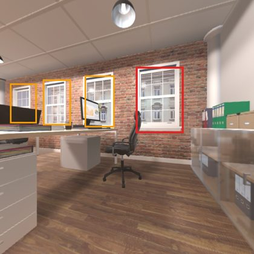
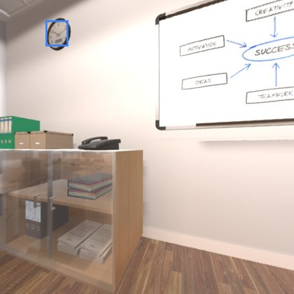
ground's VLM names candidate windows and the clock anchor.nearest(windows, clock) → the right-hand sash window.drive_to takes a capped step (0.93 m) toward the window, then looks again.
Across all examples, ground resolves objects the scene graph has not yet detected, and drive_to is the fundamental motion primitive.
explore to collect all candidate objects across the scene, then selects the correct one using the anchor object (the fireplace) via nearest.expand_vocab to add it to the detector, enabling the scene graph to localize the object on the next perception tick.expand_vocab for "zen stone" with orbit around the candidate to refine the 3D bounding box before committing to a localization answer."the table closest to the dish"
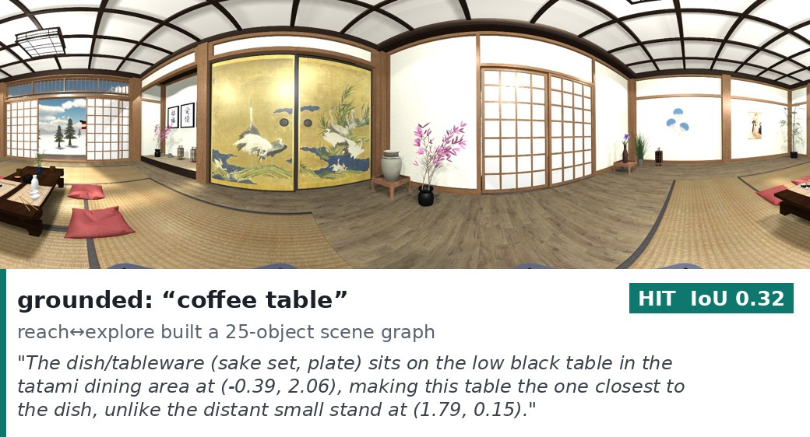
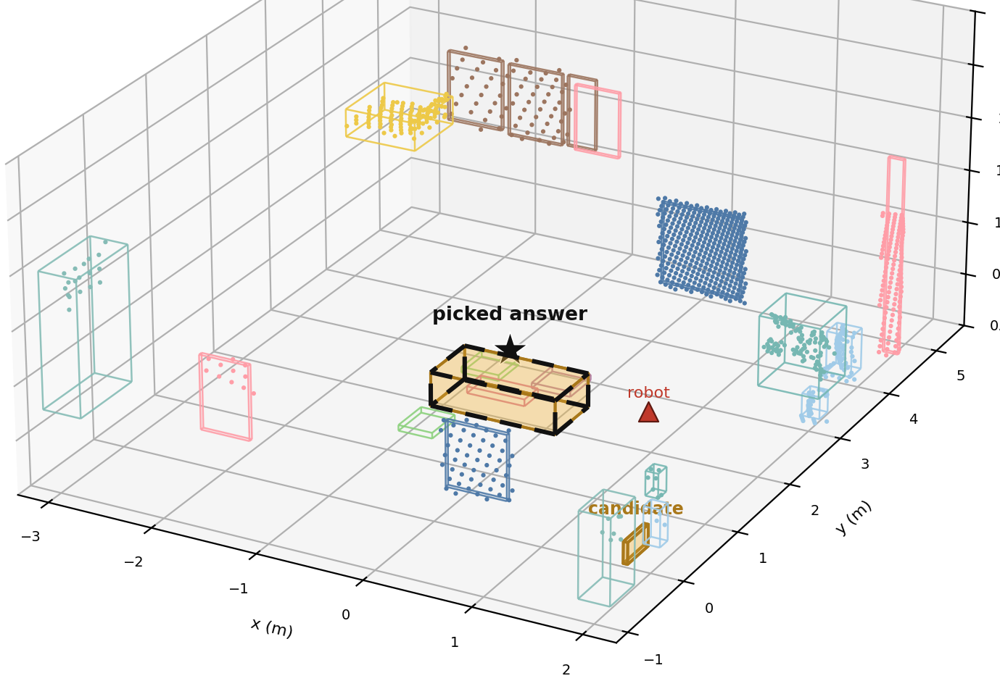
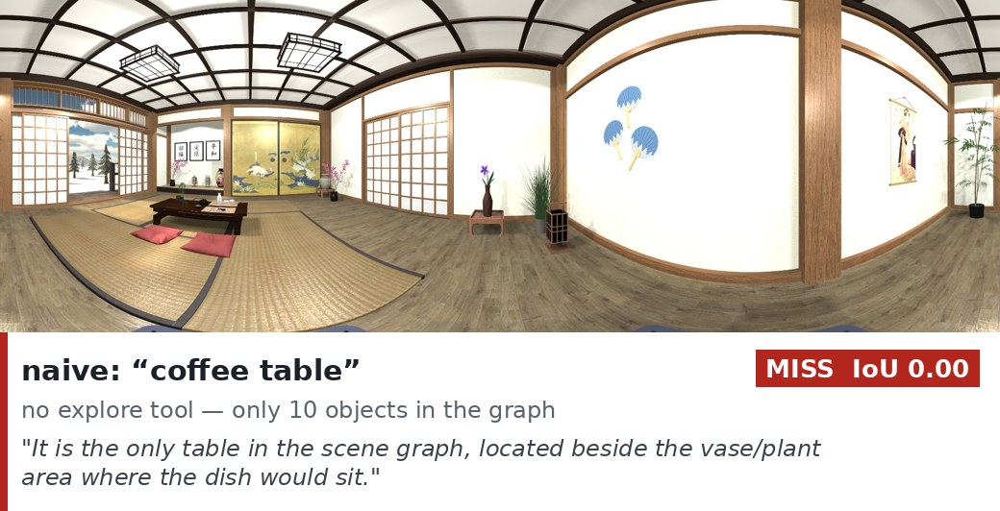
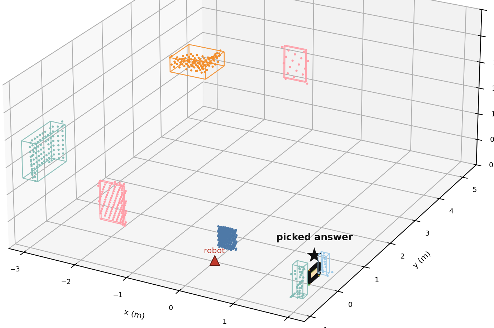
"the fossil decoration closest to the big sofa"
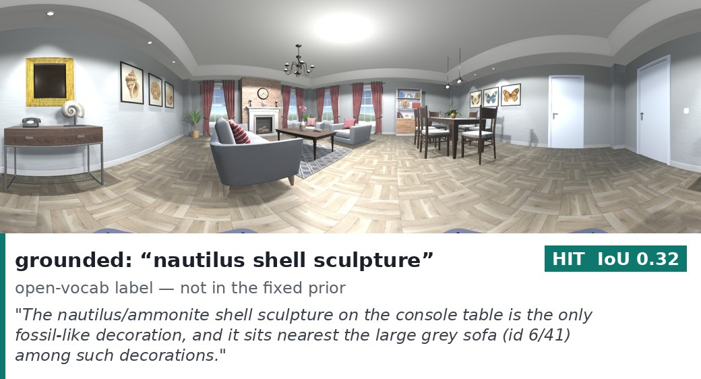
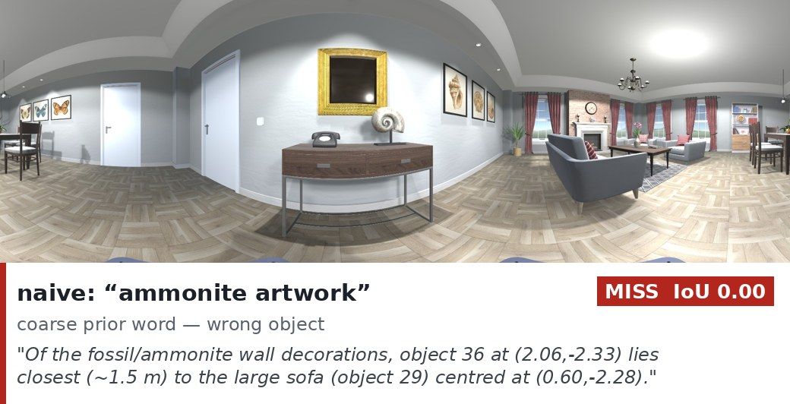
ground and drive_to - the same tool calls that work on the wheeled platform transfer directly to a humanoid.orbit around the kitchen counter to refine the kettle's 3D bounding box before committing to the localization answer.@article{vu2026anchorvln,
title = {AnchorVLN: Geometry-Anchored Vision-Language
Grounding for Open-Vocabulary Navigation},
author = {Vu, Long Giang and Yao, Chengkai and Liu, Yuxin
and Aralikatti, Rajath Chandrashekar and Aryan, FNU},
journal = {arXiv preprint arXiv:2609.12285},
year = {2026}
}